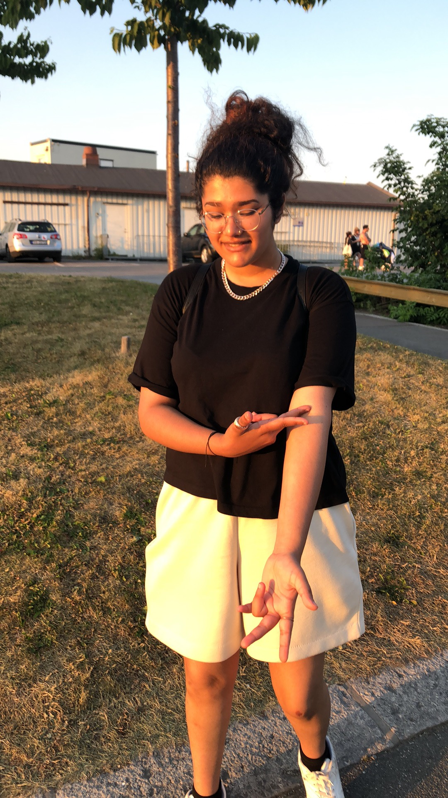
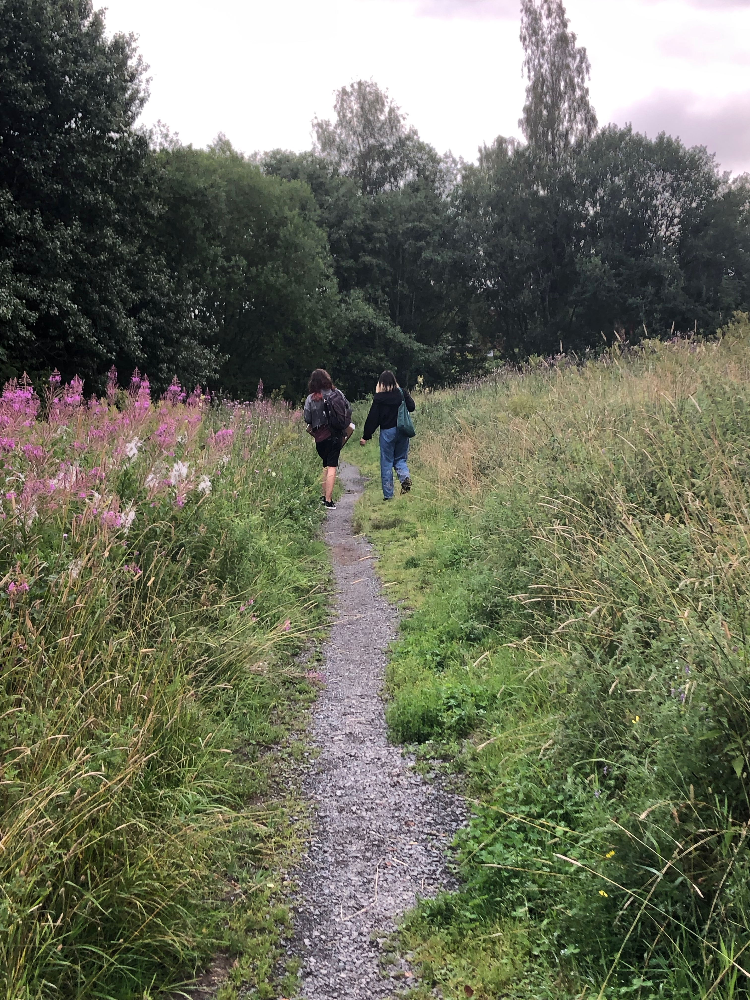
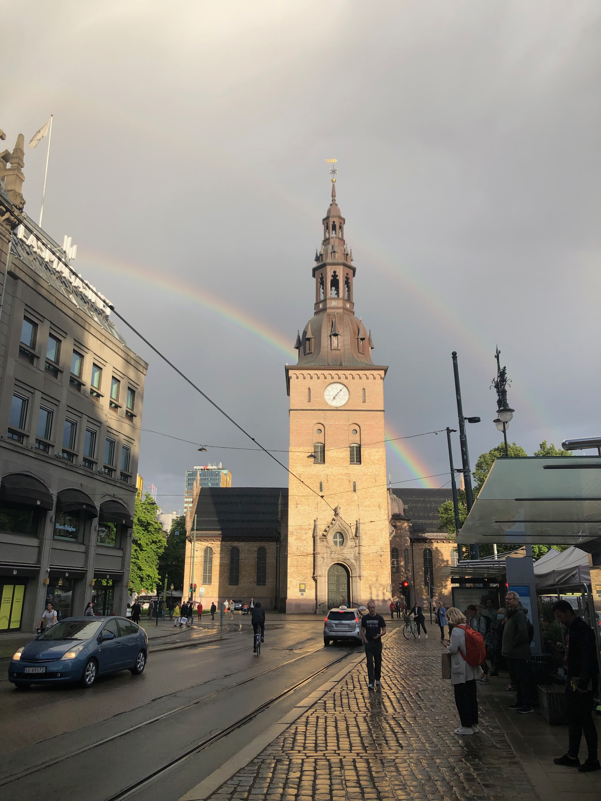
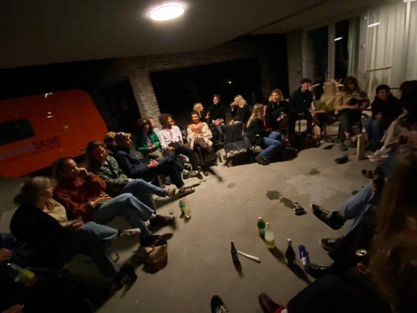

Photo: Ola ...

Photo: Ola ...
Photo: Elias This picture shows Maria at Kadettangen. They had just finally gotten back from a year in England, and could finally hang out at our usual hangout spots again. This picture also showes that they had not at all lost their meme-ridden personality.
Photo: Elias This picture was taken in a field near Eiksmarka. It was at the start of Elias and their friends' first ever move. But one of the flatmembers' family was on vacation and could not drive her things to the flat, and this picture is documenting the moving process which consisted of walking and public transport. The people photographed are Mathilde and Ingerid.
Photo: Elias At the very end of summer, the day school started. There was a double rainbow. Maybe symbolising that the school year would go okay.
Photo: Theo ...